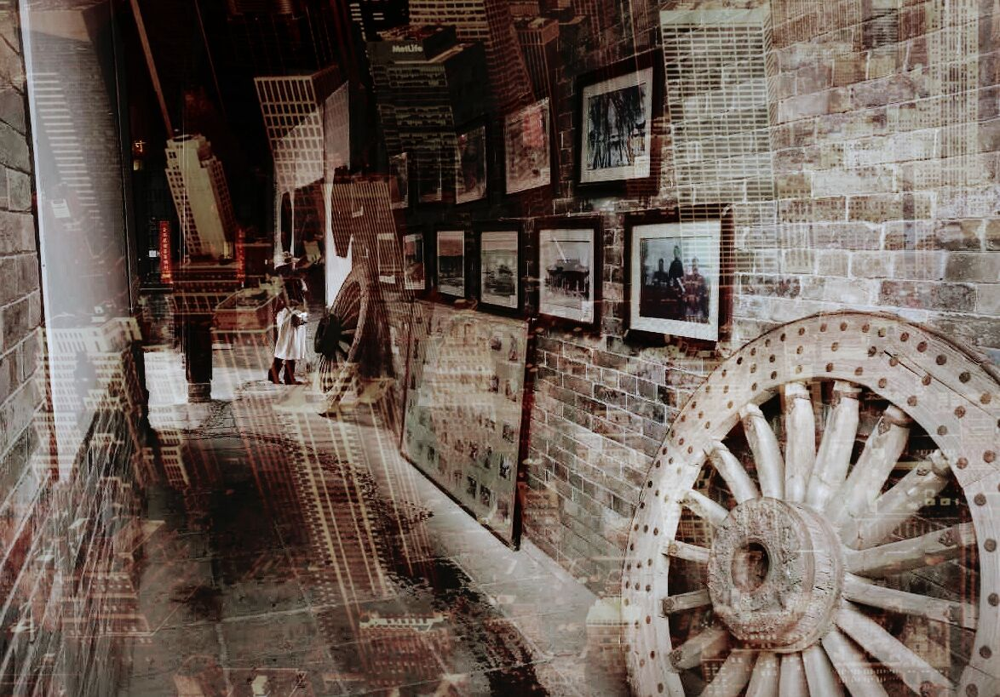
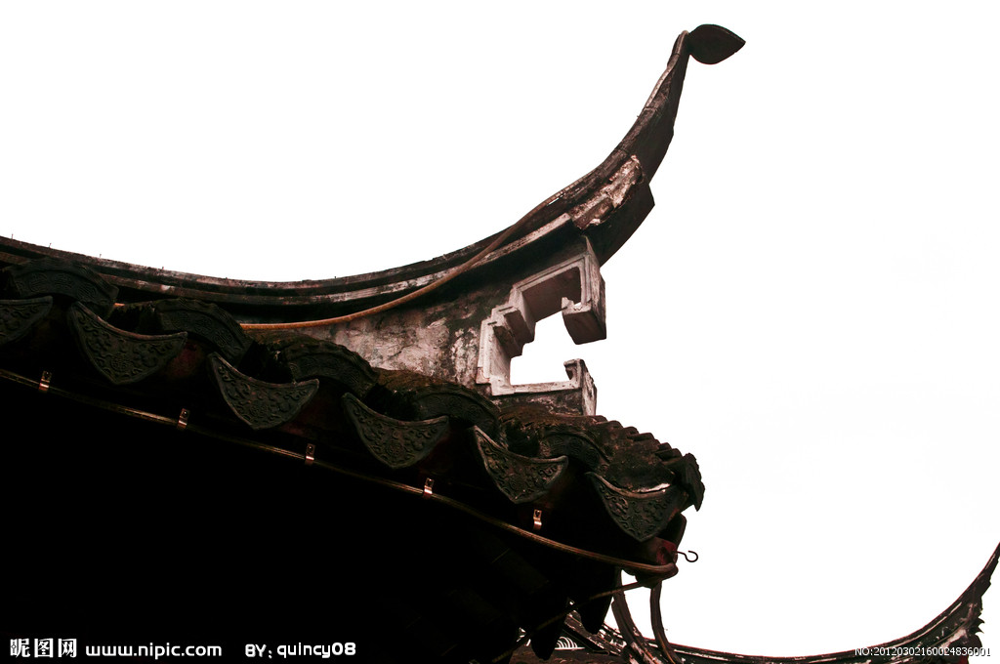
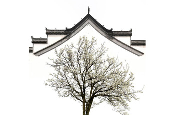
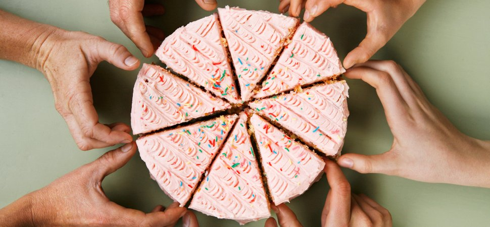

Dream to Ming Dynasty: Time Traveller's Diary
Dream to Ming Dynasty: Time Traveller’s Dairy is an educational scheme in Gao Family Mansion for primary and secondary schools. Each term the Mansion focuses on art collections, architecture styles and displays from one different room to inspire cross-curricular work in classrooms.
Involvement in "Time Traveller’s Dairy" is a process. In many ways this process is as valuable as the finished work that the students produce. This project follows a series of stages:
 Step 1: Exploration
Step 1: Exploration
The first step is to take a one-day experience in Gao Family Mansion in which involves the guided tours, themed talks, study center experience, hands on experience, etc.
Step 2: Thinking and Planing
During your visit, you should mapping in your mind about what interests you the most. It could be a picture inside the room, a sculpture on the corner of the roofing, a poem carved on the ancient China vase, the autumn leaf out side the window, the reflection of yourself inside the water surface of an ancient well…. Just imagine that you are travelling back in time, and find something that impresses you!
 
Step 3: Photographing
Take a picture of the thing that you have chosen. Be confident! You may have not used a professional camera or using graphic editing software before, but don’t be shy to try - we have professional tutors in our photography workshops and computers in our new furbished study center, you will do it with our help!
Step 4: Creating
When you have done with the photographing step, you will get a picture of your own. Try to crate something with your picture, it can be interdisciplinary – drama, literature, geometry, science, art, music, design…. Anything you like!
Step 5: Sharing
Share your work with your group or classmates. After the presentation of the whole class, you and your classmates are expected to crate a “Traveller's Dairy” which involves your creative works. There will be an exhibition for the works from different schools at the end of the term.
